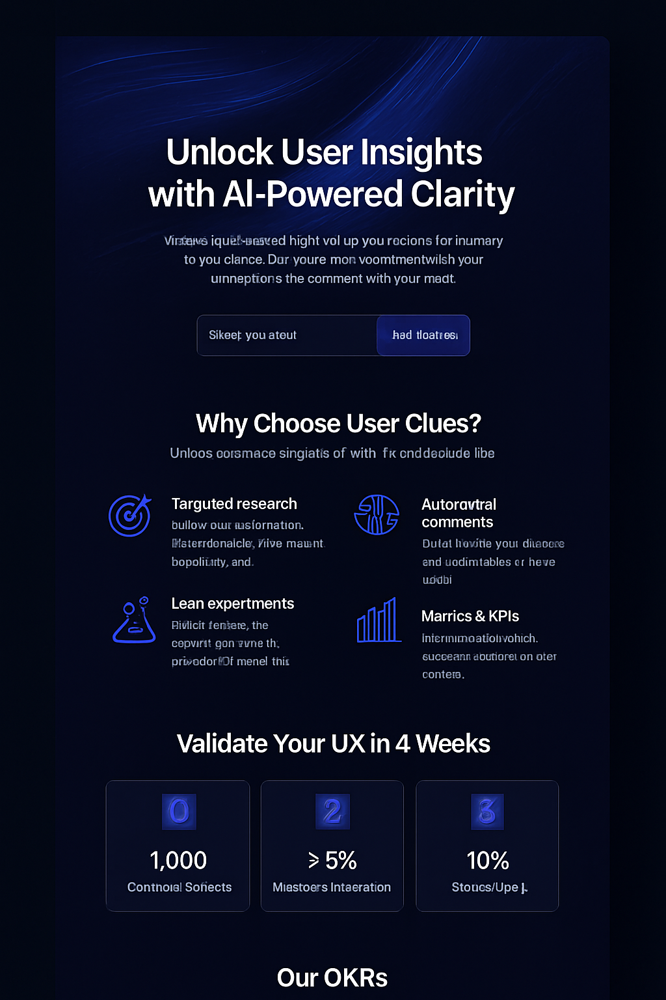
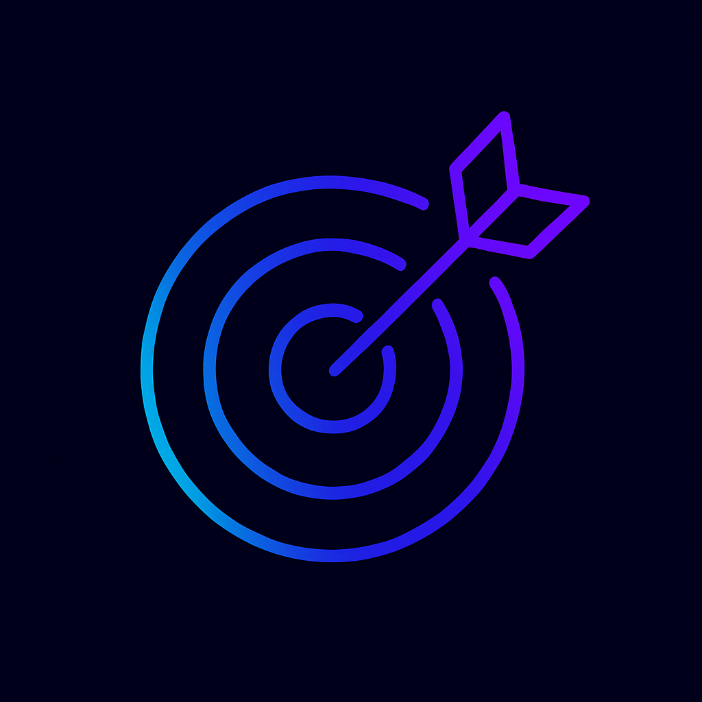

Built for High Conversion
UserClues integrates deeply with your product, delivering context-aware UX and flow recommendations that drive results.
Conversational Interface
Ask follow-up questions and get clarity on every suggestion without leaving chat.
Funnel & Flow Analysis
Automatically detect drop-offs and friction in your critical funnels.

Actionable Recommendations
Get prioritized UI, copy and flow changes you can implement today.

Team Alignment
Share intuitive reports and suggestions with stakeholders in one click.